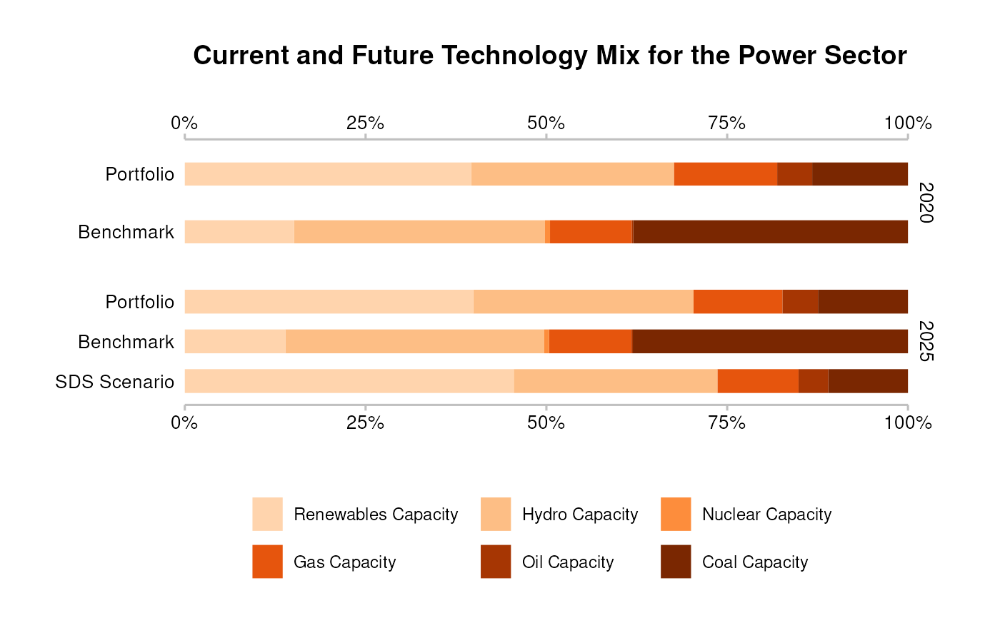

Compared to plot_techmix() this function:
is restricted to plotting future as 5 years from the start year,
outputs pretty bar labels, based on metric column,
outputs pretty legend labels, based on technology column,
outputs a title.
qplot_techmix(data)A data frame. Requirements:
The structure must be like market_share.
The following columns must have a single value: sector, region,
scenario_source.
The column metric must have a portfolio (e.g. "projected"), a benchmark
(e.g. "corporate_economy"), and a single scenario (e.g. "target_sds").
(Optional) If present, the column label is used for data labels.
(Optional) If present, the column label_tech is used for technology
labels.
An object of class "ggplot".
plot_techmix
# `data` must meet documented "Requirements"
data <- subset(
market_share,
sector == "power" &
region == "global" &
scenario_source == "demo_2020" &
metric %in% c("projected", "corporate_economy", "target_sds")
)
qplot_techmix(data)
#> The `technology_share` values are plotted for extreme years.
#> Do you want to plot different years? E.g. filter data with:`subset(data, year %in% c(2020, 2030))`.
